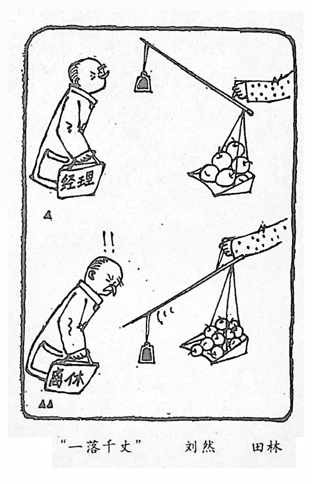

刘然；田林 《人事》1985年第1期（总第1期），封三
“一落千丈”
“A Thousand-Foot Fall”
- Text in the drawing
- 经理 / 离休
Manager / Retired - Description
- Two panels: while the man's briefcase reads “manager”, the hand weighing his apples tips the steelyard in his favour; once it reads “retired”, the beam tips against him, and he bristles.
- Note
- 一落千丈, “to drop a thousand zhang,” is the idiom for a sudden collapse in status. 离休 is the honourable retirement of veteran cadres.
- Artists
- Liu Ran 刘然; Tian Lin 田林
- Published in
- 《人事》1985年第1期（总第1期）, inside back cover
- Themes
- Retirement · Privilege

Cite
Liu Ran and Tian Lin, ““一落千丈”” [“A Thousand-Foot Fall”], Renshi (Personnel) 《人事》, 1985, no. 1, inside back cover.